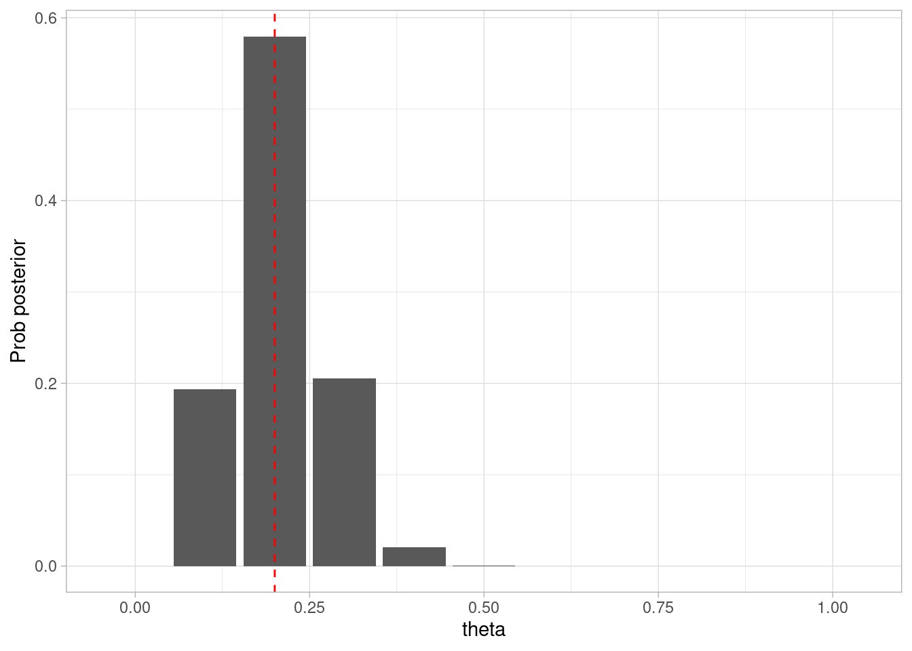

En esta sección introductoria, veremos una aplicación básica del flujo de trabajo que seguiremos. El objetivo en este ejemplo es estimar la proporción de personas que es seropositiva de una enfermedad en una población dada, usando una muestra de la población de interés a la que se le aplicó una prueba de seropositivdad.
Recordamos que el flujo básico es:
Definir un modelo generativo para la muestra de datos.
Definir la cantidad que queremos estimar en relación al fenómeno de interés.
Definir un proceso estadístico para hacer una estimación.
Probar el proceso 3 usando 1 y 2.
(Usar datos) Analizar los datos, resumir resultados.
Checar cómputos y desempeño del modelo.
2.1 Paso 1: Modelo generativo
Consideremos primero qué variables de interés tenemos: \(p\), la proporción de seropositivos en la población, \(N\) que es el número de personas a las que les hicimos la prueba, y \(N_{+}\) y \(N_{-}\) que cuentan el número de positivos y seronegativos en la muestra. Supondremos que la prueba da resultados exactos. Denotaremos por \(\theta\) a la proporción de seropositivos en la muestra.
Comenzamos construyendo el diagrama que indica cómo influye cada variable en otra (nota: no son asociaciones, sino que indican qué variables “escuchan” a otras para determinar su valor). En este caso, \(N\) y \(\theta\) son variable que no depende de ninguna otra, mientras que \(N_{+}\) y \(N_{-}\) dependen de \(N\) y \(\theta\). Como \(\theta\) es una cantidad que no observamos directamente, mostramos su nodo como un círculo.
Y ahora construimos el modelo generativo. Supondremos que la muestra de \(N\) personas se toma de manera aleatoria de la población (una población grande, así que podemos ignorar el efecto de muestreo). Supondremos provisionalmente, además, que la prueba es perfecta, es decir, no hay falsos positivos o negativos.
La siguiente función simula una muestra de \(N\) personas, y regresa el número de Positivos y Negativos en la muestra.
sim_pos_neg <-function(theta =0.01, N =20, sens =1, esp =1) {# verdaderos positivos que capturamos en la muestra Pos_verdadero <-rbinom(N, 1, theta) Neg_verdadero <-1- Pos_verdadero# positivos observados en la muestra Pos <- Pos_verdadero Neg <-1- Pos# Observacionestibble(Pos = Pos, Neg = Neg)}
Podemos hacer algunas pruebas del modelo generativo en casos extremos:
sim_pos_neg(theta =0.1, N =1e7) |>pull(Pos) |>mean() |>round(4)
[1] 0.1001
En la práctica podemos definir pruebas más exhaustivas si es necesario. En este caso, se trata principalmente de pruebas unitarias que se utilizan comunmente en desarrollo de software.
Pruebas unitarias
La práctica estándar de pruebas unitarias consiste en probar unidades relativamente pequeñas de código (por ejemplo funciones) para verificar que funcionan correctamente.
Esta estrategia debe utilizarse también, en la medida de los posible, en estadística.
2.2 Paso 2: Definir estimando
Ahora podemos definir en términos de nuestro modelo el valor que queremos estimar. En este caso, coincide con un párametro del modelo \(\theta\), pero no necesariamente es así siempre: como veremos más adelante, puede ser una cantidad que se deriva de otras variables y parámetros del modelo.
2.3 Paso 3: definir un proceso estadístico
Dada la información limitada que tenemos acerca de la población, esperamos tener cierta incertidumbre en nuestra estimación del valor de \(\theta\). En estadística bayesiana esta incertidumbre la expresamos mediante una distribución de probabilidades sobre posibles valores del \(\theta\). Si denotamos por \(D\) a los datos observados, nuestro objetivo es calcular o aproximar
\[p(\theta|D)\] que es una distribución sobre los posibles valores de \(\theta\), una vez que tenemos información de la muestra, y que pone más masa de probabilidad sobre las conjeturas de \(\theta\) que son más probables o creíbles. A esta distribución le llamamos la distribución posterior de \(\theta\).
Con esta posterior podemos hacer afirmaciones probabilísticas de la forma:
¿Cuál es la probabilidad de que \(\theta\) sea menor a 1%? (Muy pocos seropositivos)
¿Cuál es la probabildad de que \(\theta\) sea mayor a 80%? (Población cerca de saturación)
Estas cantidades se calculan, al menos teóricamente, integrando \(p(\theta|D)\) sobre los valores de \(\theta\) que nos interesan, por ejemplo,
\[P(\theta <= 0.01) = \int_0^{0.01} p(\theta|D) d\theta\] Nota: la integral la interpretamos como suma en el caso discreto.
Supongamos entonces una \(\theta\) dada, y que observamos la muestra \(1,0,0,1,0\). La probabilidad de observar esta muestra es (suponiendo observaciones independientes):
\[\theta(1-\theta)(1-\theta)\theta(1-\theta) = \theta^2(1-\theta)^3\] Para algunos valores de \(\theta\) (posibles conjeturas acerca del valor de \(\theta\)) podemos escribir una tabla como sigue (Nota: discretizamos por el momento a un número finito de valores de \(\theta\) para hacer el argumento más simple):
En la tabla vemos que hay algunas conjeturas, o posibles valores de \(\theta\), que tienen probabilidad considerablemente más alta que otra. La notación
\[p(D|\theta)\] significa: la probabilidad de los datos \(D\) dado el valor de \(\theta\). Nótese que esta distribución no es la posterior que describimos arriba, y no es una distribución de probabilidad sobre \(\theta\) (las probabilidades no suman uno). Esta función se llama usualmente verosimilitud de los datos, e incorpora supuestos concretos del proceso generador de los datos.
Usando reglas de probabilidad (en particular la regla de Bayes), observamos que
\[p(\theta | D) = \frac{p(D|\theta)p(\theta)} { p(D)}.\] Como \(p(\theta|D)\) debe dar una distribución de probabilidad (suma o integra a 1), entonces \(p(D)\) debe ser una constante de normalización para el numerador de la derecha, es decir, basta escribir
\[p(\theta | D) \propto p(D|\theta)p(\theta) \] Ahora es donde encontramos que tenemos que tener \(p(\theta)\) para poder calcular la cantidad que nos interesa, que es la distribución posterior \(p(\theta|D)\). \(p(\theta)\), la distribución a priori o distribución inicial es simplemente una afirmación de dónde puede estar \(\theta\), antes de observar ningún dato.
Por el momento, podríamos poner \(p(\theta)\) constante, de manera que es parte de la constante de normalización, y sólo tendríamos que normalizar como sigue:
Con esto, expresamos nuestro conocimiento acerca de \(\theta\), después de observar los datos, con una distribución posterior de probabilidad sobre las posibles conjecturas. Este es el resultado principal de inferencia bayesiana, y es la base para tomar decisiones relativas a \(\theta\).
Usando información adicional
Supongamos que tenemos información adicional acerca de \(\theta\), por ejemplo, que en un experimento similar anterior alguien tomó una muestra de dos personas, y encontraron dos negativos. Tenemos entonces como creencias inciales:
Por ejemplo, al probabilidad inicial de que \(\theta\) sea muy grande es cercana a cero, pues observamos dos negativos y ningún positivo. Ahora regresamos a considerar nuestra fórmula
\[p(\theta | D) \propto p(D|\theta)p(\theta), \]
En este caso, la apriori o inicial tiene un efecto sobre la posterior. Reconsideramos entonces la posterior de nuestra muestra de 5 personas, y calculamos el producto de \(P(D|\theta)\) por \(p(\theta)\):
Otra verificación útil que podemos hacer es, una vez que hemos definido nuestro modelo generativo y un modelos estadístico asociado, generar bajo simulación datos que podríamos observar. Esto tiene como fin verificar que nuestro modelo generativo y nuestro modelo estadístico producen datos que están de acuerdo con el conocimiento experto (teoría científica o conocimiento de negocio).
Podemos ver por ejemplo dónde esperamos ver el número de positivos a lo largo de distintas muestras, cuando \(N=30\):
simulacion_datos_tbl |>group_by(rep, theta_sim) |>summarise(Npos =sum(Pos), .groups ="drop") |>ggplot(aes(x = Npos)) +geom_bar() +labs(x ="Número de positivos", y ="Frecuencia (muestras)")
Observamos que con nuestros supuestos, hay una probabilidad alta de observar 0 positivos (alrededor de 0.30). Esto se debe en parte a la discretización que hicimos, y que nuestra apriori pone peso considerable en prevalencia igual a cero, lo que quizá no es muy realista, y probablemente deberíamos escoger al menos una discretización más fina.
También, si consideramos los supuestos como correctos, esto puede indicar el riesgo de usar una muestra chica para estimar prevalencia si esta es muy baja: es probable que obtengamos 0 observaciones positivas.
Verificación predictiva a priori
Con este tipo de verificaciones podemos detectar las consecuencias de nuestros supuestos (incluyendo la elección de distribuciones a priori), así como otras decisiones de modelado (como la discretización).
Conflictos con el conocimiento del área deben ser explorados para entenderlos y si es necesario corregir nuestros supuestos.
Este tipo de verificaciones es muy flexible, y debe adaptarse a los aspectos del conocimiento del área que son importantes para los expertos. Podemos usar todos nuestros recursos analíticos (tablas, resúmenes, gráficas) para producir estos chequeos.
2.4 Paso 4: Probar el proceso de estimación
Antes de utilizar datos, verificamos cómo se comporta nuestro proceso de estimación de acuerdo a los supuestos de nuestro modelo generativo.
Verificación a priori
Lo mínimo que esperamos de nuestro método es que, bajo nuestros propios supuestos acerca del proceso generador de datos y nuestro procedimiento de estimación definido, nuestra función de estimación no tenga problemas numéricos o de programación, y que las estimaciones que arroja son apropiadas para la cantidad que nos interesa estimar. El procedimiento a grandes rasgos es:
Establecer valores de los parámetros a estimar
Simular datos observados (con una \(N\) apropiada, dependiendo del tamaño de muestra que esperamos, aunque se puede explorar hacer más grande o más chico este valor).
Calcular posterior de las cantidades de interés
Compara los valores de 1) con la posterior de 3)
Definir que las posteriores son apropiadas para la cantidad que nos interesa estimar es delicado, y más adelante veremos algunos criterios para evaluar este aspecto. Por lo pronto, haremos algunas pruebas simples que pueden diagnosticar errores graves:
theta <-0.2N <-30# simularset.seed(9914)datos_sim <-sim_pos_neg(theta = theta, N = N)posterior <-calcular_posterior(datos_sim$Pos)ggplot(posterior, aes(x = theta, y = prob_posterior)) +geom_col() +labs(x ="theta", y ="Prob posterior") +geom_vline(xintercept = theta, color ="red", linetype ="dashed")

En este caso, la estimación parece correcta. Podemo repetir el proceso con distintos valores de \(\theta\):
Y vemos que en general nuestro método parece funcionar correctamente.
Observaciones
Más adelante veremos cómo comparar valores a estimar con la posterior a través de varias simulaciones de manera más rigurosa. Por el momento, recuerda que incluso pruebas simples o limitadas son mejores que ninguna prueba.
Típicamente los valores iniciales se toman de la distribución a priori, como hicimos arriba. Esta prueba es en general más apropiada, pues no nos interesan configuración de parámetros con probabilidad inicial extremadamente baja (imposibles según nuestros supuestos), pero también es posible tomar algunos valores fijos de interés.
Veremos más de chequeos o pruebas predictivas a priori, que en general también sirven para entender la adecuación del modelo y supuestos en términos de como coinciden o no datos generados con la teoría.
Este paso también es importante para entender si, bajo nuestros propios supuestos, es factible obtener información útil bajo el diseño que propongamos. Por ejemplo, alguien podría proponer un diseño de muestra que sólo tome 5 personas. Podemos probar cómo se comportan nuestras estimaciones:
Nuestra respuesta en este caso es que quizá con 3 personas la información obtenida no será suficiente para tomar decisiones útiles: nótese que la posterior está muy poco concentrada alrededor del verdadero valor de \(\theta\).
2.4.1 Introduciendo un bug
Supongamos que tenemos un error en el cálculo de la posterior:
calcular_posterior_bug <-function(muestra, prob_priori){# distribución inicial o a prior theta <-seq(0, 1, length.out =11) priori <-tibble(theta = theta, prob_priori = (1- theta) * (1- theta)) |>mutate(prob_priori = prob_priori /sum(prob_priori))# calcular la probabilidad posterior N <-length(muestra) Npos <-sum(muestra) prob_post <-tibble(theta = theta) |>left_join(priori, by ="theta") |># la siguiente línea tiene un error!mutate(prob_posterior = theta ^ Npos * (1- theta)^((N - Npos * prob_priori))) |>mutate(prob_posterior = prob_posterior /sum(prob_posterior)) prob_post |>select(theta, prob_posterior)}
Donde vemos en varios casos que la “posterior” está lejos de ser consistente con los valores simulados de prueba para \(\theta\).
Aspectos numéricos
Es importante notar que los cálculos que hicimos arriba ingoran un principio importante al hacer cálculos de productos de probabilidades: generalmente es mejor utilizar la escala logarítmica para hacer los cálculos, y sólo al final convertir a probabilidades. Esto es porque es fácil tener subflujos numéricos al multiplicar muchas probabilidades pequeñas.
Aunque en este caso no es crítico, la siguiente función sigue esta práctica que en general es necesario seguir:
Ejercicio: corre las pruebas para esta versión de la función como hicimos arriba. Este es un cambio correcto, y desde el punto de vista de desarrollo, si nuestra batería de pruebas es apropiado podemos hacerlo con más confianza.
2.5 Paso 5: Analizar los datos y resumir resultados.
Con este trabajo hecho (ojo: para modelos grandes es un trabajo considerable, pero importante), podemos proceder a analizar los datos.
Supongamos que se tomó una muestra de \(N=20\) personas, con 17 negativos y 3 positivos. Calculamos la posterior:
# en nuestro modelo *no* importa el orden, verifica:datos_tbl <-tibble(Pos =c(rep(1, 3), rep(0, 17)))posterior <-calcular_posterior(muestra = datos_tbl$Pos)ggplot(posterior, aes(x = theta, y = prob_posterior)) +geom_col() +labs(x ="theta", y ="Prob posterior")
Y hay varias maneras de resumir esta posterior. Por ejemplo, podemos calcular (ojo: veremos más detalles de esto más adelante):
# Intervalo de alta probabilidad 90%posterior |>mutate(theta = theta) |>arrange(desc(prob_posterior)) |>mutate(cumsum =cumsum(prob_posterior)) |>filter(cumsum <=0.9) |>pull(theta) |>range()
[1] 0.1 0.2
2.6 Paso 6: Evaluar el modelo y cómputos
En este ejemplo, el modelo es muy simple, y los cómputos son sencillos. Para modelos más complejos es necesario checar que los cómputos sean correctos, y que el modelo ajusta razonablemente bien a los datos en los aspectos que nos interesan, de modo que dejaremos esta discusión cuando veamos el flujo bayesiano más avanzado.
2.7 Versión continua
En el ejemplo anterior utilizamos una variable aleatoria discreta para modelar la seroprevalencia, pero esto generalmente no es conveniente. Ahora repetimos el ejercicio considerando más naturalmente que \(\theta\) puede tomar cualquier valor en \([0,1]\).
Para el paso 1 y 2 (definir modelo generativo y cantidad a estimar), utilizamos el mismo diagrama de arriba y la misma función que simula datos. Igual que antes, para cualquier muestra \(D\) compuesta de 0 y 1’s (negativos y positivos), la probabilidad de observar la muestra \(D\) dada una conjetura \(\theta\) es:
\[ p(D|\theta) = \theta^{N_+}(1-\theta)^{N_-}\] Y recordamos que desde el punto de vista bayesiano, queremos resumir nuestra información obtenida con la distribución posterior \(p(\theta|D)\), e igual que antes tenemos que:
\[p(\theta | D) \propto p(D|\theta)p(\theta).\] Por el momento pondremos la densidad continua uniforme \(p(\theta) = 1\) para \(\theta\in [0,1]\) (densidad uniforme), entonces
En este caso, para normalizar tenemos que hacer la integral de la expresión de la derecha, y dividir por el resultado. En general, escribiremos
\[B(a,b) = \int_{0}^1 \theta^{a-1}(1-\theta)^{b-1} d\theta\] así que en nuestro caso, la posterior es:
\[p(\theta|D) = \frac{1}{B(N_{+} + 1,N_{-}+1)} \theta^{N_+}(1-\theta)^{N_-}\] Es posible demostrar con cálculo que \(B(a,b) = \frac{(a-1)!(b-1)!}{(a+b-1)!}\), pero eso no es importante ahora. Este tipo de densidades pertenecen a la familia beta con parámetros \((a,b)\), donde \(a>0, b>0\).
Por ejemplo, si observamos 2 positivos y tres negativos, nuestra posterior es una beta con parámetros \((3,4)\), y se ve así:
Notamos adicionalmente que es posible seleccionar otra distribución inicial que no sea la uniforme. En este caso particular es conveniente (aunque no siempre tiene sentido) usar una distribución beta, de manera que es fácil ver que si ponemos por ejemplo
entonces la posterior, por la fórmula de Bayes, es:
\[p(\theta|D) \propto \theta^{N_+ +a -1 }(1-\theta)^{N_{-}+b-1}\] que también es de la familia beta, pero con parámetros \((N_{+} +a, N_{-} +b)\).
2.7.1 Ejercicio: actualizaciones de posterior
Podemos examinar la posterior para dados distintos datos. Supondremos que la distribución a priori es uniforme.
set.seed(92192)theta_seq <-seq(0,1, 0.001)datos_sim <-sim_pos_neg(theta =0.25, N =12) |>mutate(obs =ifelse(Pos==1, "P", "N")) |>mutate(n =1:12)# graficar posteriores para cada ndatos_graf <- datos_sim |>mutate(n_pos =cumsum(Pos), n_neg =cumsum(Neg)) |>mutate(muestra =accumulate(obs, ~paste0(.x, .y))) |>group_by(n) |>mutate(dens_graf =list(tibble(theta = theta_seq, densidad =dbeta(theta_seq, n_pos +1, n_neg +1)))) |>unnest(dens_graf)ggplot(datos_graf, aes(x=theta, y = densidad, group = n)) +geom_line() +facet_wrap(~ muestra) +geom_abline(slope =0, intercept =1, color ="gray")
Ahora repetimos con una inicial beta \((0,2)\) (que equivale a observar dos negativos y ningún positivo en una muestra de 3 personas), de modo que \(p(\theta) = 2(1-\theta)\):
set.seed(92192)theta_seq <-seq(0,1, 0.001)datos_sim <-sim_pos_neg(theta =0.25, N =12) |>mutate(obs =ifelse(Pos==1, "P", "N")) |>mutate(n =1:12)# graficar posteriores para cada ndatos_graf <- datos_sim |>mutate(n_pos =cumsum(Pos), n_neg =cumsum(Neg)) |>mutate(muestra =accumulate(obs, ~paste0(.x, .y))) |>group_by(n) |>mutate(dens_graf =list(tibble(theta = theta_seq, densidad =dbeta(theta_seq, n_pos +1, n_neg +3)))) |>unnest(dens_graf)ggplot(datos_graf, aes(x=theta, y = densidad, group = n)) +geom_line() +facet_wrap(~ muestra) +geom_abline(slope =-2, intercept =2, color ="gray")
En este punto, podríamos ir al siguiente paso, que es escribir una función para calcular la posterior. En realidad ya sabemos su función de densidad, pero cualquier resumen que hagamos de esta distribución requerirá de integrales (¿por qué? piensa en cómo calcular la probabilidad de ser menor que un valor, o cómo se calcula la media).
Aunque en este ejemplo simple la posterior tiene una forma conocida y hay manera de calcular (analíticamente o con rutinas numéricas ya implementadas) esos resúmenes de interés (media, cuantiles, etc.), en general calcular integrales no es una estrategia que podamos llevar muy lejos.
Más de verificaciones apriori
Antes de continuar, sin embargo, veremos cómo se veo el chequeo predictivo a priori que consideramos en la sección de arriba.
Podemos ver por ejemplo dónde esperamos ver el número de positivos a lo largo de distintas muestras, cuando \(N=30\):
simulacion_datos_tbl |>group_by(rep, theta_sim) |>summarise(Npos =sum(Pos)) |>ggplot(aes(x = Npos)) +geom_bar() +labs(x ="Número de positivos", y ="Frecuencia (muestras)")
`summarise()` has grouped output by 'rep'. You can override using the `.groups`
argument.
Este resultado es consecuencia de nuestros supuestos, antes de ver los datos, y resume que esperamos con mayor probabilidad un número bajo de positivos (en una muestra de N=30), y que es muy poco probable que observemos prevalencias muy altas. Dependiendo de la situación, este puede ser un resultado aceptable.
Un resultado no aceptable para una enfermedad que sabemos que es relativamente rara (aunque tenemos incertidumbre), por ejemplo, podría ser el siguiente:
`summarise()` has grouped output by 'rep'. You can override using the `.groups`
argument.
Este resultado no es aceptable cuando sabemos que es prácticamente imposible que la mayoría de la población está infectada. Debemos entonces regresar y ajustar nuestros supuestos: el problema en este caso es la elección de la distribución a priori para \(\theta\).
Observación: la crítica es sobre el conjunto completo de supuestos iniciales que hacemos acerca del problema. Cuando los diagnósticos no son aceptables desde el punto de vista teórico es necesario investigar dónde está el problema. Las distribuciones apriori que usamos, igual que cualquier supuesto, están sujetas a esta crítica. Nótese que esta crítica la estamos haciendo sin ver los datos que esperamos observar: es una crítica de supuestos.
2.7.2 Métodos Monte Carlo
Una vez que tenemos la densidad posterior podemos mostrarla o resumirla de varias maneras. Si tenemos una expresión analítica, esos resúmen típicamente consisten de integrales, por ejemplo:
La media o mediana posterior
Deciles o u otro tipo de percentiles de la posterior
Intervalos de probabilidad posterior
Este proceso puede ser no trivial incluso para densidades posteriores conocidas. La alternativa a integrar es simular de la posterior y calcular las cantidades de interés a partir de las simulaciones. En general, esto es más fácil que integrar. En nuestro ejemplo, en lugar de usar una función de calcular_posterior, construimos una que es simular_posterior.
Esta función será simple porque simular de una beta es un problema estándar, y existen muchas implementaciones. Podríamos escribir, por ejemplo:
Si queremos calcular la media, por ejemplo, hacemos
sims_post |>pull(theta) |>mean()
[1] 0.4280916
Si queremos la probabilidad de que la prevalencia esté por debajo de 20% hacemos:
sims_post |>summarise(prob =mean(theta <0.2))
# A tibble: 1 × 1
prob
<dbl>
1 0.0961
Muchas veces se presentan intervalos de probabilidad posterior, por ejemplo, podríamos reportar que con 90% de probabilidad la prevalencia está en el siguiente intervalo:
Observación: No hay un intervalo mágico que debe reportarse (por ejemplo 95% de probabilidad es una costumbre o superstición). Hay varias maneras de construir intervalos de probabilidad. Dejaremos esta discusión para más adelante.
Métodos Monte Carlo
Los métodos Monte Carlo están basados en simulación de variables aleatorias. Las cantidades que nos interesan son integrales bajo una densidad de probabilidad. Si queremos calcular en general \[I = \int f(x)p(x)dx,\] simulamos una gran cantidad de observaciones \(x_1,\ldots, x_M\) bajo \(p(x)\), y entonces (Ley de los grandes números):
\[\frac{1}{M} \sum_{i=1}^{M} f(x_i) \to I\] cuando \(M\to \infty\). De este modo, podemos aproximar con la precisión que requiramos la integral \(I\).
Nota 1: Sin más información del proceso de simulación, no es posible demostrar que una aproximación es “suficientemente” buena, no importa que tan grande sea \(M\). Más adelante veremos una batería de diagnósticos para al menos excluir los casos comunes en los que la aproximación es mala.
Nota 2: En nuestro caso, las integrales de interés usualmente son de la forma \[I = \int f(\theta)p(\theta|D) d\theta,\] donde \(D\) es la información de la muestra, \(\theta\) en general es un vector de parámetros del modelo, y \(f(\theta)\) es una función de \(\theta\) que nos interesa. Por ejemplo, para la media posterior de \(\theta\), usaríamos \(f(\theta) = \theta\). Podemos aproximar cualquier integral si tenemos simulaciones de la posterior:
Finalmente, checamos todo nuestra construcción de estimación como hicimos arriba, la diferencia es que ahora usamos simulaciones para entender el comportamiento de la posterior. En este caso, el proceso es como sigue:
Generamos un valor de la apriori \(\theta_{sim} \sim \text{Beta}(1,3)\)
Simulamos datos de la muestra (\(N=25\)) con el valor simulado de \(\theta\)
Simulamos un número grande \(M\) de valores de la posterior (aquí usaremos \(M=10000\))
Repetimos 1-3
set.seed(812)simulacion_rep <-map_df(1:20, function(rep){# simular de la apriori theta_sim <-rbeta(1, 1, 3)# simular datos según modelo datos_sim <-sim_pos_neg(theta = theta_sim, N =25)# simulaciones montecarlo para la posterior posterior <-simular_posterior(datos_sim$Pos, 10000)# junta todo posterior |>mutate(n_sim =n()) |>mutate(rep = rep) |>mutate(theta_sim = theta_sim) })simular_posterior <-function(muestra, n){tibble(theta =rbeta(n, sum(muestra) +1, length(muestra) -sum(muestra) +3))}
Ahora usamos histogramas por ejemplo para mostrar cómo luce la posterior, y comparamos con los valores de la simulación:
ggplot(simulacion_rep, aes(x = theta)) +geom_histogram(bins =50) +labs(x ="theta", y ="Prob posterior") +geom_vline(aes(xintercept = theta_sim), color ="red", linetype ="dashed") +facet_wrap(~rep)
2.8 Observaciones
El proceso de arriba lo refinaremos considerablemente en el resto del curso.
En primer lugar, los modelos generativos serán más complicados, y estarán basados en teoría más compleja (que expresamos con diagramas causales)
Usaremos más herramientas y componentes para construir modelos estadísticos apropiados, ya sea que construyamos un modelo completo para todo el proceso de generación de datos, o que usemos modelos estándar como regresión para aproximar respuestas, cuando es apropiado
Refinaremos el proceso de checar que el cómputo (checar Monte Carlo) y la inferencia (verificación apriori) es correcta bajo nuestros supuestos.
Finalmente, veremos qué hacer después de hacer la estimación y que los puntos de arriba están resueltos, para tener confianza en nuestras conclusiones.
2.8.1 Resumen
Aquí juntamos algunas observaciones que se derivan de lo que hemos visto (flujo de trabajo y estimación bayesiana):
Todo nuestro trabajo está fundamentado en entender qué es lo que queremos estimar dentro de un modelo generativo. Los diagramas causales nos ayudan a conectar el problema de interés con nuestros modelos, a construir modelos generativos y hacer explícitos nuestros supuestos.
El proceso de estimación siempre es el mismo: nuestro estimador es la distribución posterior, que se construye a partir de la verosimilitud y la apriori (modelo generativo). Nuestro estimador es la posterior de las cantidades de interés, que pueden resumirse de distintas maneras. Cualquier cálculo derivado de otras cantidades de interés debe considerar toda la posterior (no solo la media o la moda, etc. posterior).
Nuestro proceso incluye los chequeos predictivos a priori (basados en simulación de datos). Esto son cruciales para detectar problemas en nuestros supuestos (vs teoría) y que nuestro proceso sea internamente consistente. Esto también es una verificación de la información a priori.
Generalmente es más conveniente y práctico hacer simulaciones que calcular analíticamente la posterior o sus integrales.